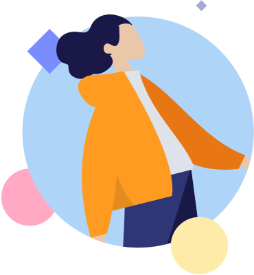
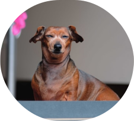
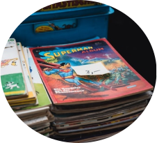
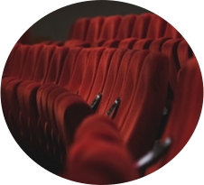
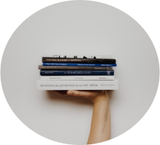

Meu nome é Izabela da Silva Neves sou estudante da UFU no curso de Engenharia de Computação.
Mostro aqui meus trabalhos que juntam minhas paixões por design e tecnologia.
Tenho 20 anos e muita vontade de explorar e aprender o que me chama atenção.
Minhas paixões:

Os animais

A cultura Nerd/Geek
Technologia

Cinema

Livros

Escrever livros